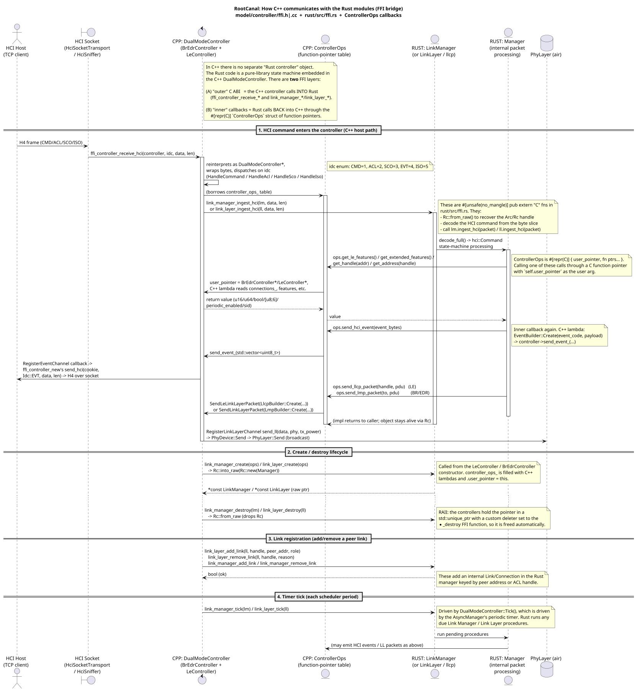
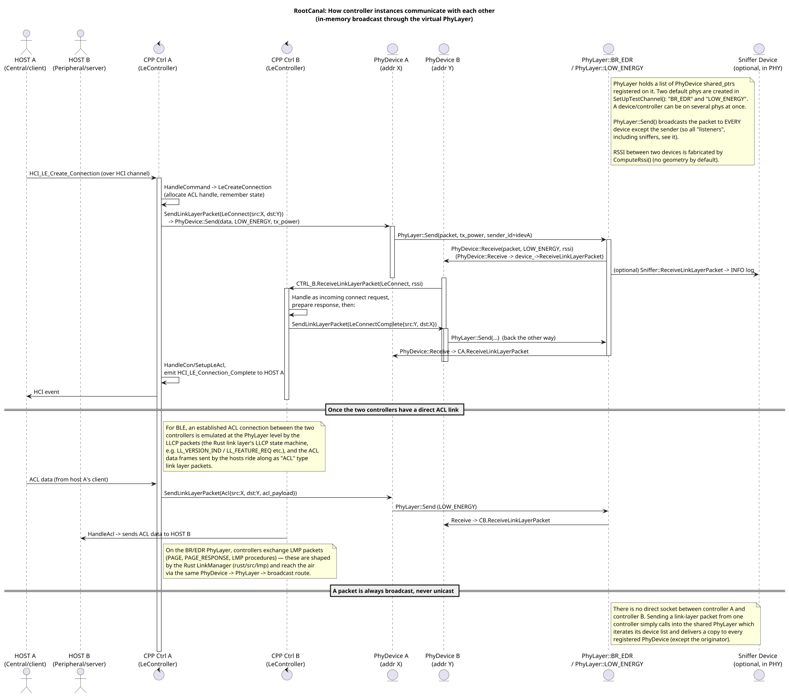
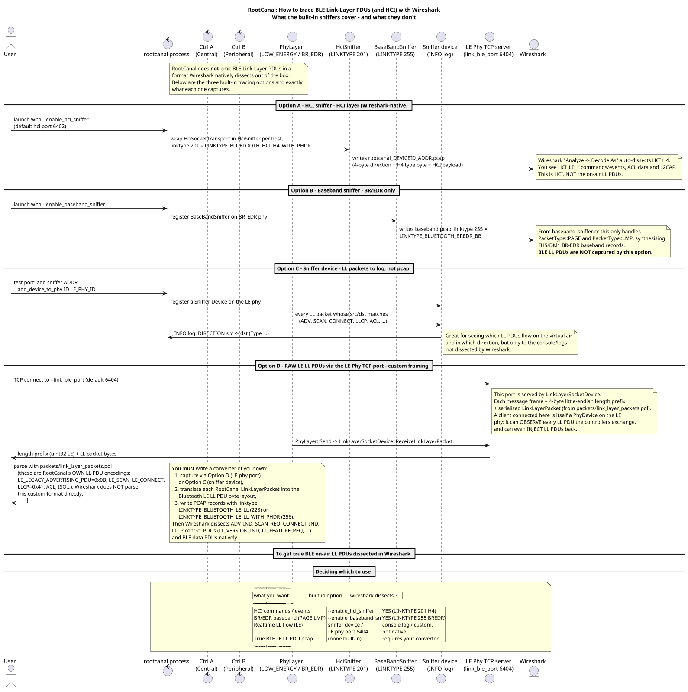

0.Overview
RootCanal is a virtual Bluetooth Controller. A running instance exposes four TCP ports:
test_port (6401), hci_port (6402), link_port (6403,
BR/EDR Phy) and link_ble_port (6404, LE Phy). Every HCI TCP connection spawns a new
virtual controller (a HciDevice = DualModeController). All controllers
live in one process, in one TestModel, and exchange packets purely in memory through
virtual PhyLayers. The Rust modules (BR/EDR Link Manager + LE Link Layer)
are embedded in the C++ controllers through a C ABI.
| Source files | Planted from |
| PlantUML sources | cpp_to_rust_ffi.puml, controller_to_controller.puml, ble_ll_tracing_wireshark.puml |
| Diagrams (SVG) | ffi.svg, controller.svg, tracing.svg |
| Diagrams (PNG) | ffi.png, controller.png, tracing.png |
{kind=link}
{kind=link}
{kind=link}
{kind=link}
{kind=link}
{kind=link}
1.C++ → Rust communication (FFI bridge)
There are two FFI layers between C++ and Rust:
(A) the outer C ABI (model/controller/ffi.h|.cc →
rust/src/ffi.rs) that C++ uses to drive the Rust Link Manager /
Link Layer, and (B) the inner ControllerOps
callback table (a #[repr(C)] struct of function pointers) that Rust uses to call
back into C++, with user_pointer pointing at the owning
BrEdrController* / LeController*.

ControllerOps, and the controller / destroy / link lifecycle +
timer ticks.
2.Controller instance → Controller instance
There are no sockets between controllers. To send a link-layer packet a controller
calls through its PhyDevice into the shared PhyLayer, which
broadcasts the packet to every registered device
(except the sender). RSSI between two devices is fabricated by
ComputeRssi().

3.Tracing BLE Link-Layer PDUs with Wireshark
Key finding: RootCanal does not natively export BLE Link-Layer PDUs in a
Wireshark-dissectable format. --enable_hci_sniffer captures the HCI layer
(LINKTYPE_BLUETOOTH_HCI_H4_WITH_PHDR, 201); --enable_baseband_sniffer
only emits BR/EDR PAGE + LMP (LINKTYPE_BLUETOOTH_BREDR_BB, 255). To observe raw LE
LL PDUs you attach to the LE Phy TCP port (6404) using custom PDL framing, or use the
sniffer device for console logs — and converting those to a Wireshark LE LL
pcap requires your own little converter.
